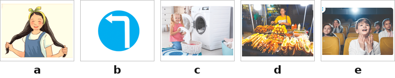
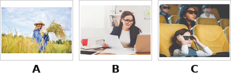
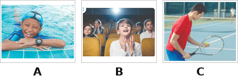
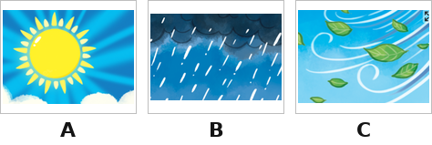
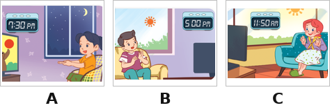
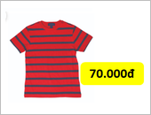
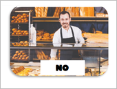

I’m Tri. I’m a pupil at Le Manh Trinh Primary school. On Sundays, I usually go to the cinema in the morning and watch films with my sister, Dung. She is very slim with a round face. She also wants to the bookshop near our house to buy an English book. It’s thirty thousand dong. In the afternoon, we go to the zoo. We can see many peacocks and lions. We love lions because they roar loudly. We have a lot of fun on Sundays.


Nhập thông tin để hệ thống ghi nhận kết quả.
Bạn có thêm 5 phút để hoàn tất. Hết 5 phút bài sẽ tự động nộp.
Hành vi này đã được ghi nhận. Hãy quay lại chế độ toàn màn hình để tiếp tục làm bài.